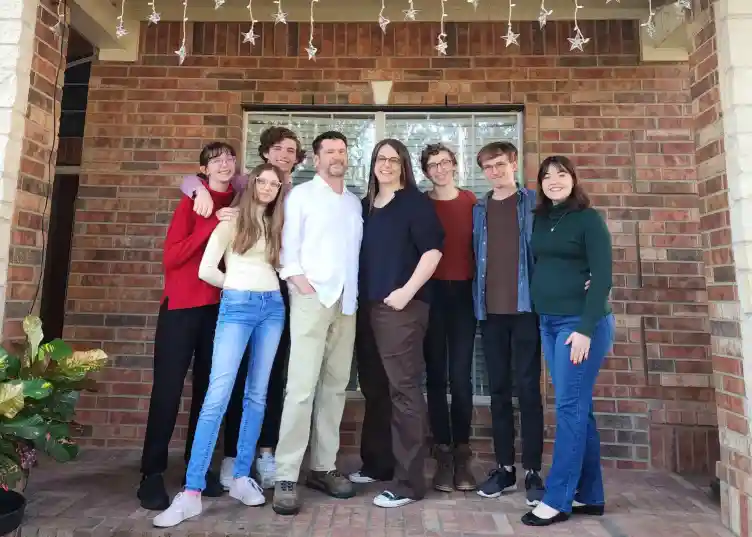

About Me
My name is Carrie. I grew up in Oregon in the United States. My husband and I have been married for 32 years and have five children. My oldest is married, and they just welcomed their first baby into the world! Our children live all over the U.S., and my husband and I live in Texas. I love the band Coldplay and have been to nine Coldplay concerts (two more are coming up very soon)! I love The Lord of the Rings trilogy (books and movies), cookies, Dr Pepper, Christmas, and bullet journaling. I work at a local high school, teach piano lessons, and if BYU Pathway Worldwide will get their act together, I might actually be able to graduate soon with my bachelors degree.
Texas, United States of America
According to Wikipedia.org, Texas became the 28th state admitted to the Union on 29 December 1845. The state capital is Austin. It is the second largest state in the United States and is known as The Friendly State. It is widely known that "everything's bigger in Texas."